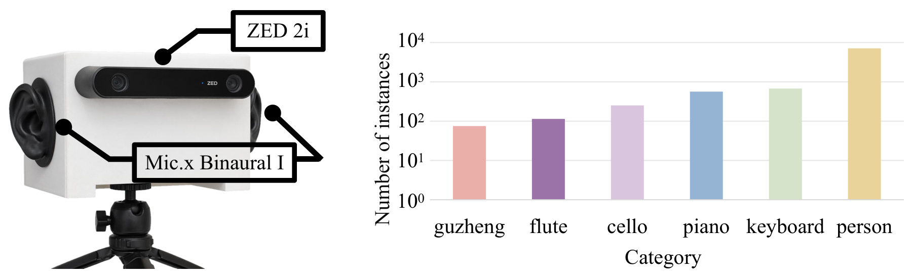

(a) The recording rig pairs a ZED 2i binocular camera with a Mic.x Binaural I microphone so that the camera–microphone geometry approximates human eyes and ears. (b) Instance counts in BiAVIS-Bench. (c) Instance counts in the annotated FAIR-Play dataset.
| Dataset |
Videos |
Clips |
Categories |
Sounding instances |
Scenes |
| FAIR-Play (annotated) |
1,364 |
13,304 |
8 |
19,164 |
Single music room |
| BiAVIS-Bench |
870 |
8,052 |
6 |
8,656 |
Indoor, outdoor, and semi-open halls |
Video is 1,280 × 720 at 30 fps. Binaural audio is 48 kHz, 32-bit. The two streams are soft-synchronized by a shared ROS 2 trigger, with a synchronization error bounded by 10.4 μs. Videos are cut into one-second clips, and only the center frame of each clip is annotated. Each sounding instance has a pixel mask, a category label, and a sound-source point. A clip contains at most four simultaneous sources.
The FAIR-Play annotations, together with the BiAVIS-Bench data and annotations, will be released later.